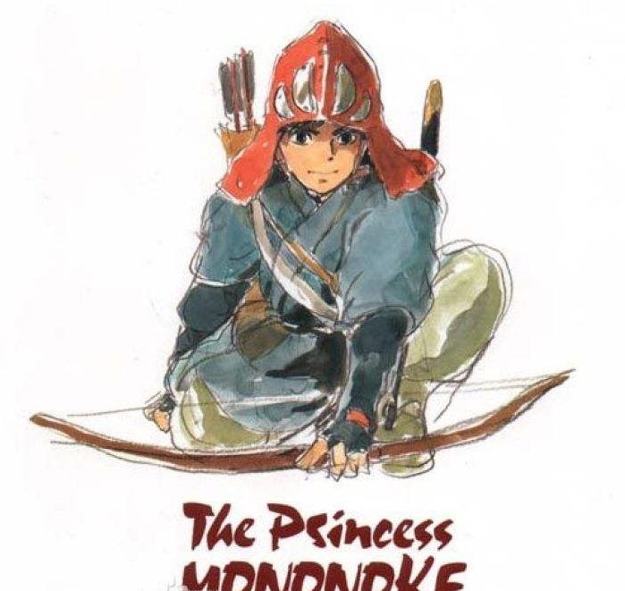

芳の饭
我是一諾，即興吃飯和睡覺是我一點小小的業餘愛好，有時我也會寫一點簡單的隨筆或者自己收藏一些奇怪的東西。
小站建於15年的大學時代，作品大多稚嫩不成熟，承蒙沒什麼人喜歡，一直走到今天，十分感謝。
人在武漢求學中，也並不是寫作或者美術方面的專業，所以並沒有經過什麼專業的訓練。而今鮮少更新，文字質量也一般，還望戴著耳機的你海涵。
愈到現在愈發覺得，美好的東西，在於藏與糅合。中二時期的那種，瘋狂的尋求理解，不管喜歡什麼，做什麼，看了什麼，都要告訴全世界的感覺，已經一去不復返了。喜歡的事物，還是想要悄悄塞進自己的口袋里面啊。
PS：這篇簡介仿照了 花鏡泉 兄台的介紹，還望他/她海涵，另提一句，ta演奏的平凡之路很好聽。